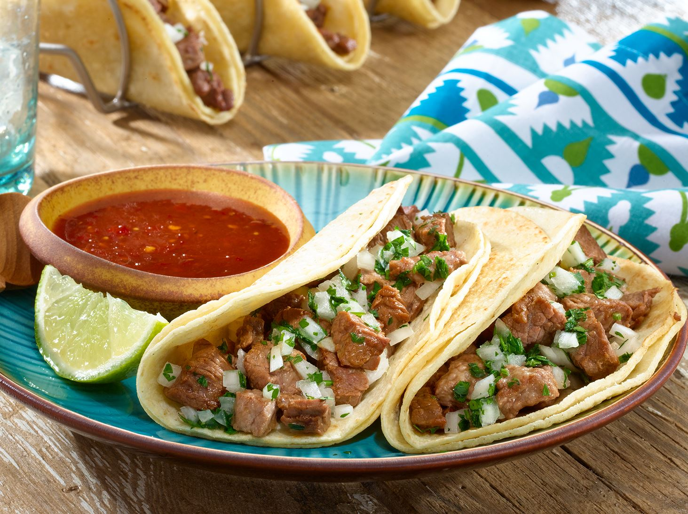

Tacos de Carne Asada
Deliciosos tacos de carne asada, típicos de la cocina mexicana.
Ingredientes
- Carne de res
- Tortillas de maíz
- Cebolla
- Cilantro
- Limón
- Salsa

Instrucciones
- Asar la carne a la parrilla
- Picar la cebolla y el cilantro
- Servir la carne en la tortilla con la cebolla, cilantro y salsa
Consejos
- Marina la carne con especias antes de asar para más sabor
- Agrega limón antes de comer para un toque fresco
Disfruta de estos tacos llenos de sabor